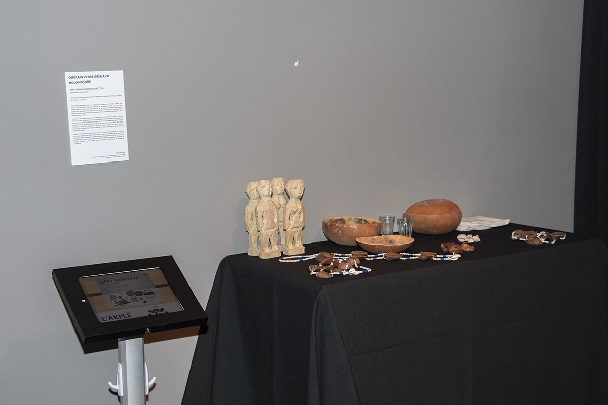

Ghislain Pierre Gbèmavo Hounkponou
Drô Yanyan (Cauchemar), 2026
Ghislain Pierre Gbemavo Hounkponou est un artiste, photographe et créateur numérique originaire du Bénin. Titulaire de la Licence professionnelle en gestion de l’image de l’École supérieure de gestion et de technologie (ESGT) du Bénin, il poursuit actuellement un DESS en arts, création et technologies à l’Université de Montréal. Sa pratique explore les liens entre image, mémoire, technologie et expérience immersive.
Le travail de Ghislain Hounkponou explore les expériences immersives, les récits culturels béninois et les relations entre corps, perception et technologies numériques. En mobilisant la réalité virtuelle afin de créer des mondes parallèles immersifs inspirés des récits et des représentations symboliques des cultures béninoises, son travail cherche à créer des expériences sensibles dans lesquelles le public devient participant, traversant des espaces instables inspirés du cauchemar et des états de conscience altérés.

casque et manettes de réalité virtuelle, écran tactile, matériaux mixtes
dimensions variables
Drô Yanyan (Cauchemar) est une expérience immersive en réalité virtuelle qui explore les liens entre rêve, cauchemar et perception. Inspiré à la fois des recherches sur le rêve en neurosciences et de références culturelles béninoises, le projet invite le public à interagir avec la lumière et le son dans un environnement sensoriel instable qui transforme progressivement son sentiment de présence dans l’environnement virtuel.